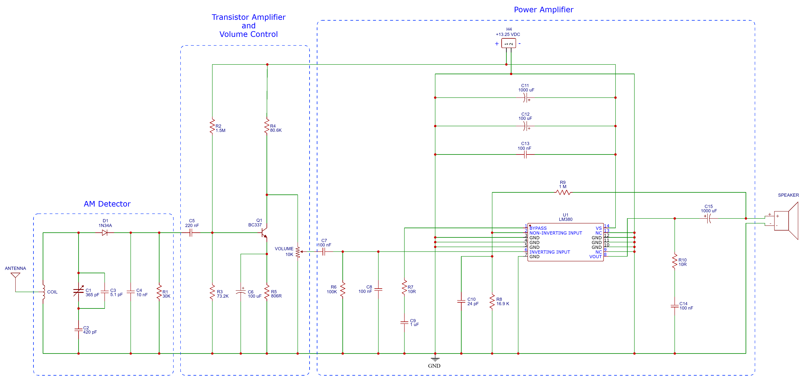
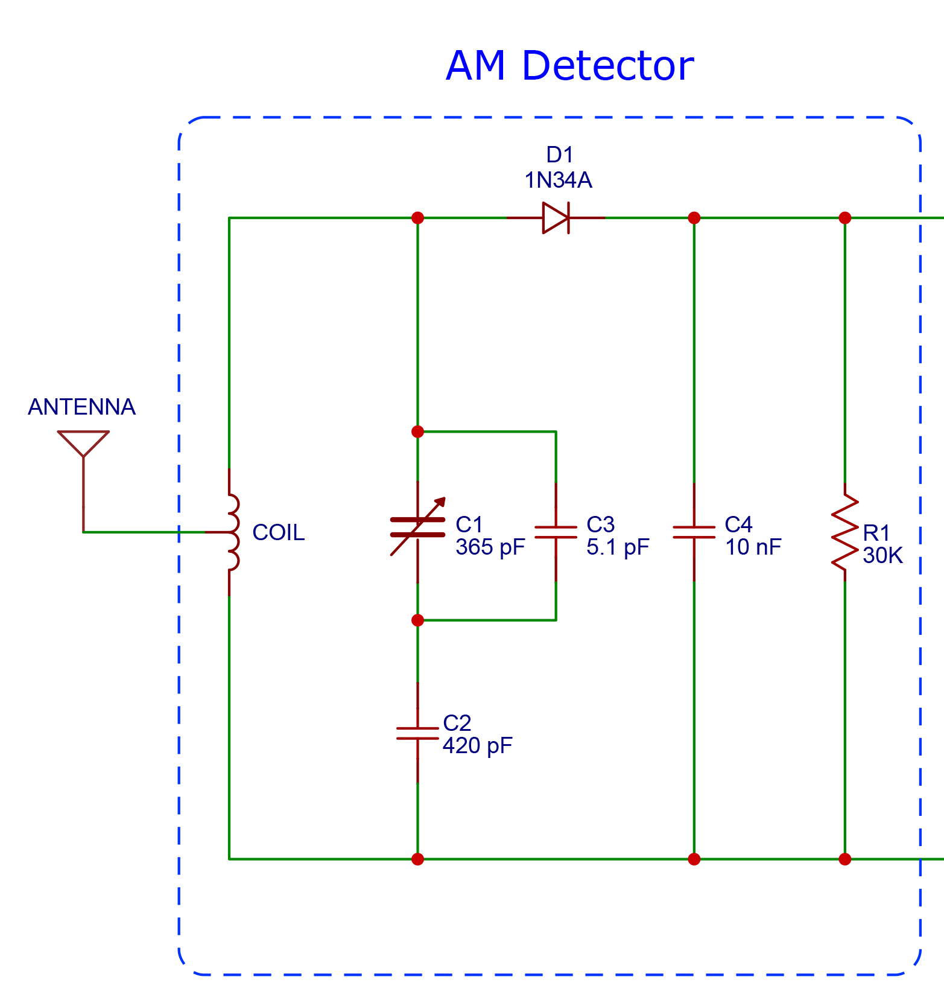
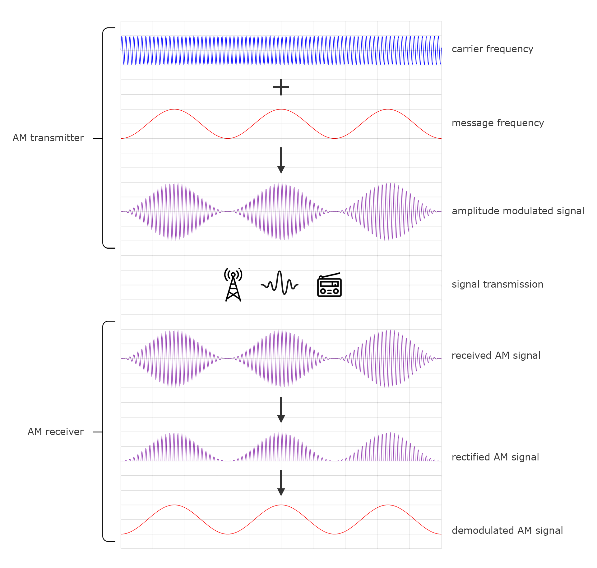
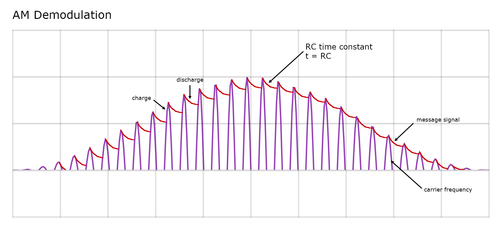

Radio AM
Note
Esta es una traducción de la página How to Build an AM Radio Receiver escrita por Scott Campbell.
Construir una radio AM es una forma divertida de iniciarse en la electrónica. En este proyecto, construiremos un receptor de radio AM. A lo largo del proceso, veremos cómo diseñar y optimizar circuitos osciladores LC, circuitos RC, amplificadores usando transistores y amplificadores de potencia.
Esta radio recibe frecuencias de emisión (broadcast) en AM que corresponde en el rango de 535 kHz a 1705 kHz, en América del Norte y del Sur es lo habitual. En Europa y Asia, el rango es de 535 kHz a 1605 kHz, por lo que también veremos una forma de modificar el rango sintonizable de la radio mediante una técnica llamada bandspreading.
Esta radio ofrece una excelente recepción y selectividad al utilizar una antena de bobina y cable.
Descripción general del receptor de radio AM

Empezando por el lado izquierdo del esquema, la antena capta las frecuencias de radio del aire. La bobina y el condensador variable (C1) permiten sintonizar la radio en una frecuencia específica dentro del rango de sintonización del aparato. Un diodo de germanio (D1) rectifica la señal de AM; a continuación, un filtro de condensador y resistencia (C4 y R1) demodula la señal de mensaje de la señal portadora (más adelante se profundizará en este tema). A continuación, un amplificador de transistores (Q1) aumenta la señal de bajo voltaje procedente del detector hasta un nivel que pueda ser utilizado por el amplificador de potencia (U1). El amplificador de potencia tiene una potencia de salida de 2,5 vatios, lo que permite a la radio alimentar fácilmente un altavoz de 5 vatios y 4-32 ohmios. El circuito es solo de corriente continua (CC) y funciona mejor a 13,25 V CC, aunque puede llegar hasta los 16 V CC.
El circuito detector
La función de un circuito detector de AM es tomar la forma de onda de audio modulada en amplitud y convertirla en una forma de onda de CA positiva que pueda amplificarse y utilizarse para alimentar un altavoz. Esta radio de AM utiliza un detector de envolvente de diodos. Los detectores de envolvente de diodos funcionan rectificando y demodulando la forma de onda modulada en amplitud.

La antena está conectada a una bobina de alambre en paralelo con un condensador variable. La antena capta las frecuencias de radio AM del aire. La inductancia de la bobina y la capacitancia del condensador forman un circuito oscilador LC capaz de resonar a frecuencias específicas. La frecuencia de resonancia del circuito determina qué frecuencia (emisora de radio) se sintonizará. Los circuitos LC tienen una frecuencia de resonancia definida por esta ecuación: Receptor de radio AM - Fórmula de la frecuencia de resonancia
… la formula …
Esta frecuencia (f) representa el punto en el que la reactancia inductiva (XL) y la reactancia capacitiva (XC) son iguales, lo que produce la máxima oscilación y amplificación de la frecuencia sintonizada.
El condensador variable
El condensador variable permite modificar la frecuencia de resonancia del circuito oscilador para sintonizarla con la frecuencia de la emisora de radio. La señal de radio se «sintoniza» cuando la frecuencia de resonancia del circuito oscilador coincide con la frecuencia de la emisora de radio.
Un condensador variable de 365 pF como este es muy utilizado en proyectos de radio y resulta ideal para esta radio, aunque también se pueden emplear otros tipos y valores de capacitancia. El cursor del condensador variable se conecta al ánodo del diodo. El cuerpo del condensador variable se conecta a tierra.
… indicar que lo consegui en aliexpress …
Rectificación AM
La señal resonante procedente del circuito oscilador LC pasa a continuación por un diodo. Esto rectifica la señal, de modo que solo pasa la mitad positiva de la misma:

Demodulación AM
R1 y C4 forman un circuito filtrador RC que demodula la señal AM después de que haya sido rectificada por el diodo. La señal AM consta de dos frecuencias: una frecuencia portadora y una frecuencia de mensaje. Las frecuencias portadoras AM oscilan entre 535 kHz y 1705 kHz en América del Norte y del Sur (entre 535 kHz y 1605 kHz en Europa y Asia). La frecuencia de mensaje suele estar dentro del rango audible para el oído humano: de 20 Hz a 20 kHz.
Después de que un pulso de frecuencia portadora atraviesa el diodo, el condensador C4 se carga. Sin embargo, la resistencia R1 proporciona una ruta a tierra, por lo que la carga de C4 se disipa según la ecuación de la constante de tiempo:
T (tau) = R x C
El tiempo que C4 permanece cargado influye en la eficacia con la que se pueden suavizar los picos de la frecuencia portadora:

La constante de tiempo RC (tau) del filtro crea una envolvente de la señal eléctrica que sigue los picos de la frecuencia portadora. Una constante de tiempo demasiado corta no suavizará en absoluto la frecuencia portadora. Una constante de tiempo demasiado larga hará que los pulsos se solapen entre sí y provoquen distorsión. Lo ideal es que la constante de tiempo sea lo suficientemente pequeña como para seguir los cambios más rápidos de la señal de audio en la señal del mensaje, pero lo suficientemente grande como para suavizar la portadora de radiofrecuencia.
Si se modifica el valor de C4 o de R1, se alterará la constante de tiempo y se verá afectado el sonido. Probé diferentes constantes de tiempo sustituyendo R1 por un potenciómetro y lo ajusté hasta que el sonido resultara más nítido. Al aumentar demasiado la constante de tiempo, el sonido se volvía suave y confuso, y al reducirla en exceso, sonaba chirriante. El mejor sonido se obtuvo con 30 kΩ y C4 a 10 nF.
Con R1 a 30 kΩ y C4 a 10 nF, la constante de tiempo es:
… poner unos cálculos …
Elección de un diodo
Probablemente, el factor más importante a tener en cuenta a la hora de elegir un diodo para un circuito detector de radio AM es la tensión directa. Cuanto mayor sea la tensión directa, más potente deberá ser la señal resonante en el circuito oscilador LC para poder atravesar el diodo. Un diodo con una tensión directa más baja permitirá el paso de una señal más débil, lo cual es deseable para poder sintonizar emisoras de radio de baja potencia o lejanas.
Los diodos de germanio son una opción clásica que se ha utilizado en innumerables diseños de radio. Tienen una baja caída de tensión directa, baja capacitancia y conmutación rápida. Sin embargo, se pueden utilizar otros diodos, y los diodos Schottky y de silicio también son populares.
Esta tabla compara las tensiones directas y los números de referencia de algunos de los diferentes diodos que son populares en los circuitos detectores de radio:
| Diode Type | Example Part Numbers | Typical Forward Voltage (Vf) | Notes |
|---|---|---|---|
| Germanium diode | 1N34A, 1N60 | ~0.2–0.3 V | Excellent for crystal radios; very sensitive due to low Vf |
| Schottky diode | 1N5711, BAT54 | ~0.15–0.45 V | Very good alternative to germanium; fast and widely available |
| Silicon small-signal | 1N4148, 1N914 | ~0.6–0.7 V | Works, but less sensitive; needs stronger signals |
| RF detector diode | HSMS-2850, HSMS-2820 | ~0.15–0.35 V | Designed specifically for RF detection; excellent performance |
| Power silicon diode | 1N4001–1N4007 | ~0.7–1.0 V | Poor choice; too high Vf and slow response |
| LED | Any standard LED | ~1.6–3.3 V | Not suitable; very high Vf |
| Tunnel diode | 1N3716 | ~0.1–0.3 V | Rare; can work but not practical for typical builds |
Amplitud de banda
La amplitud de banda permite modificar el rango de sintonización de una radio y cambiar la forma en que las frecuencias se distribuyen a lo largo de ese rango. La amplitud de banda depende de la inductancia de la bobina y de la capacitancia del condensador variable, el condensador de ajuste y el condensador de compensación. En este circuito, C2 es el condensador de compensación y C3 es el condensador de ajuste. La calculadora de extensión de banda de la página web Electron Bunker es una herramienta gratuita que calcula los valores ideales para los condensadores de relleno y de ajuste en función del rango de frecuencias al que quieras sintonizar la radio.
Cómo utilizar la calculadora de ancho de banda:
Introduzca la frecuencia más baja y la más alta (en kHz) del rango sintonizable previsto para la radio. Introduzca la capacitancia mínima y máxima del condensador de sintonización (el condensador variable). La capacitancia máxima del condensador variable es el valor nominal del mismo, 365 pF en este caso. La capacitancia mínima del condensador variable es en realidad cero, pero al introducir 0 pF no funcionaba en la calculadora. La capacitancia más baja que funcionaba era 20 pF, así que utilicé ese valor como capacitancia mínima. Introduzca la capacitancia parásita. Dejé este campo en blanco. A continuación, la calculadora mostrará los valores ideales para el condensador de relleno, el condensador de ajuste y el inductor (bobina). Si ya tienes una bobina fabricada, la siguiente sección tomará la inductancia de la bobina y mostrará los mejores valores para los condensadores de relleno y de ajuste.
Uso de una antena de bobina y alambre
Construir y probar diferentes bobinas es divertido y fácil. Los distintos tamaños de bobina, las tomas y las inductancias pueden influir en la recepción de la señal; por lo general, las bobinas más grandes ofrecen una mejor selectividad y una recuperación de la señal más potente.
La bobina que utilicé tiene una inductancia de 243 uH y se fabricó enrollando cable magnético de calibre 26 muy apretado alrededor de un tubo de cartón de 3,96 cm (1.57") de diámetro y 9,9 cm (3.9") de longitud. La bobina tiene 96 vueltas, con una derivación en la décima (10th) vuelta para conectar la antena de alambre. La derivación se puede hacer retorciendo un bucle en el alambre magnético en la décima vuelta y, a continuación, continuando con el bobinado sin romper la conexión conductora a través de la bobina. Lija ligeramente el esmalte del bucle y fija la antena de alambre a él con una pinza cocodrilo.
La selectividad se refiere a la capacidad de la radio para sintonizar y separar emisoras de radio muy próximas entre sí. La bobina influye en gran medida en la selectividad. Aunque la selectividad de esta radio es buena con una bobina y una antena de alambre, puede mejorarse utilizando una antena de bucle magnético.
… me salte la parte de la otra antena.
Puesta a tierra de la radio
¿Alguna vez has montado un circuito amplificador de audio en una placa de pruebas y has notado que al mover la mano cerca del circuito se produce ruido? ¿O has observado que al tocar el cuerpo de un potenciómetro el ruido parece desaparecer? Esto suele deberse a una mala conexión a tierra. Tu mano tiene carga eléctrica y puede inducir corrientes en los cables del circuito que causarán ruido, y tener una buena conexión a tierra ayudará a que estas corrientes se disipen más fácilmente. Convertir el circuito prototipo en un diseño de placa de circuito impreso (PCB) con un buen esquema de conexión a tierra también ayuda mucho.
Esta radio está diseñada para funcionar con una pila. El circuito utiliza el polo negativo de la pila como tierra, pero la conexión a tierra se puede mejorar añadiendo una conexión adicional a tierra. Aunque es opcional, esto mejorará la recepción de la señal, la claridad y el volumen del sonido. Para crear una conexión a tierra, basta con tender un cable desde el lado de tierra de la bobina hasta una pica de tierra, una tubería de agua metálica o una estaca enterrada en el suelo.
El preamplificador de transistores
La señal AM rectificada y demodulada procedente del circuito detector de diodos tiene una intensidad de solo unos 10 µA. Es necesario amplificarla para poder escucharla a través de un altavoz. Esta radio cuenta con dos etapas de amplificación. La señal procedente del circuito detector se amplifica primero mediante un transistor BC337 y, a continuación, se envía a un potenciómetro de volumen de 10 kΩ. El cursor del potenciómetro de volumen está conectado a la entrada de un chip amplificador de potencia LM380.
El transistor bipolar NPN (BJT) BC337 de Onsemi está diseñado para aplicaciones de audio, y fue el que mejor sonó tras compararlo con otros cinco transistores de calidad de audio en el mismo circuito. A continuación, mis notas sobre cómo sonaba cada uno, ordenados de mi favorito al que menos me gustó:
BC337
Suena similar al 2N3904, pero con menos distorsión.
Ruido de fondo ligeramente superior al del BC109, pero tiene un sonido más limpio y brillante.
Más potente que el BC109.
BC109
Más silencioso, con menos ruido y medios más limpios que el 2N3904.
Sonido más cálido y suave que el del BC337.
2N4401
Más potente que el 2N3904.
Sonido limpio, pero más ruidoso que el BC109.
2N3904
Suena bien, pero podría ser mejor.
BC550
El más potente de los cinco transistores probados.
El sonido es ruidoso y distorsionado.
El amplificador de transistores debe tener una alta impedancia de entrada para facilitar que el circuito detector impulse la entrada. También debe tener una baja impedancia de salida para proporcionar suficiente corriente al amplificador de potencia en la siguiente etapa. La etapa del amplificador de transistores de esta radio tiene una impedancia de entrada de 37,8 kOhmios y una impedancia de salida de 8,9 kOhmios. Además, se ha diseñado para funcionar con una ganancia de 100 Av.
Para obtener más detalles sobre cómo diseñar un amplificador de transistores, consulta nuestro otro artículo sobre Cómo construir un amplificador de transistores.
El amplificador de potencia
La potencia de salida del BC337 no es suficiente para alimentar un altavoz de más de una pulgada de diámetro aproximadamente. Para que la radio AM se oiga en una habitación, se necesita un altavoz más grande, como este de 5 W y 8 ohmios. Sin embargo, se requiere más potencia para alimentar un altavoz de este tamaño. Por lo tanto, amplificamos aún más la señal utilizando un amplificador de potencia LM380 de clase A/B de Texas Instruments. El LM380 es un chip amplificador de potencia de 2,5 vatios con una distorsión armónica total de solo el 0,2 %.
El LM380 está disponible en un encapsulado de 8 pines y en uno de 14 pines. El encapsulado de 14 pines tiene una disipación de potencia mucho mejor (8 W frente a 1,7 W), por lo que es el que he utilizado en este diseño.
… schema …
Un filtro RC de paso alto formado por R6 y C7 establece el límite inferior del ancho de banda de audio del LM380 en 15,92 Hz.
El pin de derivación (pin 1) está conectado a masa a través de R7 y C9, tal y como se recomienda en la hoja de datos.
R8, R9 y C10 forman un bucle de retroalimentación positiva que establece la ganancia de tensión (Av) en 200. La nota de aplicación del LM380 explica esto en detalle.
La salida del LM380 cuenta con una red de Zobel formada por R10 y C14 para amortiguar las oscilaciones que podrían producirse en los cables de los altavoces. Se trata de un filtro de paso bajo con Fc = 159 kHz.
Hay tres condensadores de desacoplamiento de la fuente de alimentación (C11, C12 y C13) situados junto al pin de alimentación positiva (Vs, pin 14) del LM380. Los condensadores de desacoplamiento de la fuente de alimentación proporcionan una reserva de energía al chip amplificador, para ayudar a que este responda mejor a los picos bruscos de la señal de audio. También ayudan a filtrar cualquier ruido en el circuito de la fuente de alimentación.
Requisitos de alimentación
Te recomiendo que pruebes diferentes tensiones de alimentación para ver cuál ofrece el mejor sonido en tu circuito. Para encontrar la tensión de alimentación ideal, monté un divisor de tensión con un potenciómetro conectado a una batería de 16 V y luego ajusté el potenciómetro hasta obtener el mejor sonido. También puedes utilizar una fuente de alimentación variable. Con este diseño de radio en una placa de circuito impreso, 13,25 V CC sonaba mejor. Pero el voltaje óptimo podría variar en función de la disposición del circuito y de los componentes que utilices.
Lista de materiales
El autor del artículo original ofrece un circuito impreso (PCB) y la mayoria de sus componentes, también da la opción de adquirir los componentes por separado, dejo la lista completa de todo lo que use:
| Ref. | Valor | Tipo de componente | Fabricante / Serie | Número de parte | Cantidad |
|---|---|---|---|---|---|
| C2 | 420 pF | Capacitor silver mica, 1kV, 5% | Cornell Dubilier / Knowles CDV16 | CDV16FF421JO3F | 1 |
| C3 | 5.1 pF | Capacitor C0G (NP0), 200V, 10% | Kemet Goldmax 300 | C321C519DAG5TA | 1 |
| C4 | 10 nF | Capacitor polypropylene film, 400V, 5% | Wima FKP3 | FKP3G021004B00JD00 | 1 |
| C5 | 220 nF | Capacitor metallized polypropylene film, 160V, 5% | Vishay MKP | MKP1839422164 | 1 |
| C6-C12 | 100 uF | Capacitor aluminum electrolytic, 50V, 20% | Nichicon UES | UES1H101MHM | 2 |
| C7 | 100 nF | Capacitor metallized polypropylene film, 160V, 5% | Vishay MKP | MKP1839410164 | 1 |
| C8 | 100 nF | Capacitor metallized polypropylene film, 630V, 3% | Panasonic ECW | ECW-H6104HC | 1 |
| C9 | 1 uF | Capacitor metallized polypropylene film, 400V, 3% | Panasonic ECW | ECW-F4105HL | 1 |
| C10 | 24 pF | Capacitor silver mica, 500V, 5% | Cornell Dubilier / Knowles CD15 | CD15ED240JO3F | 1 |
| C11-C15 | 1000 uF | Capacitor aluminum electrolytic, 25V, 20% | Nichicon UES | UES1E102MHM | 2 |
| C13 | 100 nF | Capacitor X7R, 200V, 5% | Kemet Goldmax 300 | C340C104J2R5TA | 1 |
| C14 | 100 nF | Capacitor polypropylene film, 100V, 5% | Wima FKP3 | FKP3D031004D00JF00 | 1 |
| R1 | 30K | Resistor 1/4W, 1%, 100 ppm | Vishay RN60 | RN60D3002FB14 | 1 |
| R2 | 1.5M | Resistor 1/4W, 1%, 100 ppm | Vishay RN60 | RN60D1504FB14 | 1 |
| R3 | 73.2K | Resistor 1/4W, 1%, 100 ppm | Vishay RN60 | RN60D7322FB14 | 1 |
| R4 | 80.6K | Resistor 1/4W, 1%, 100 ppm | Vishay RN60 | RN60D8062FB14 | 1 |
| R5 | 806R | Resistor 1/4W, 1%, 50 ppm | Vishay RN60 | RN60C8060FB14 | 1 |
| R6 | 100K | Resistor 1/4W, 1%, 100 ppm | Vishay RN60 | RN60D1003FRE6 | 1 |
| R7-R10 | 10R | Resistor 1/4W, 1%, 100 ppm | Vishay RN60 | RN60D10R0FB14 | 2 |
| R8 | 16.9K | Resistor 1/4W, 1%, 100 ppm | Vishay RN60 | RN60D1692FB14 | 1 |
| R9 | 1M | Resistor 1/4W, 1%, 100 ppm | Vishay RN60 | RN60D1004FB14 | 1 |
| Q1 | BC337 | Transistor BJT NPN | Onsemi | BC33740BU | 1 |
| U1 | LM380 | Amplificador de potencia de audio 2.5W | Texas Instruments | LM380N/NOPB | 1 |
| H1-H6 | N/A | Terminales de tornillo duales | Same Sky | TB001-500-02BE | 5 |
| VOLUME | 10K | Potenciómetro lineal, 1/10W | Alps RK163 | RK1631110U1Q | 1 |
Otros componentes que debes adquirir fuera de mouser:
Cuando analizas los componentes, te das cuenta de que usa algunos muy raros como los condensadores de 420pF y el 5.1pF que son valores fuera del estándar. Por lo que son difíciles de conseguir.